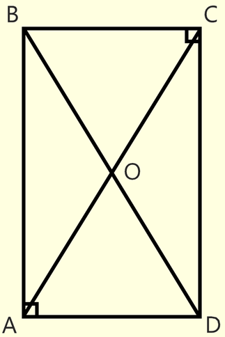

*
Прямоугольник

# Прямоугольник - параллелограмм, у которого все углы равны 90 градусов.
# Поскольку прямоугольник является параллелограммом, ему присущи все свойства, которые есть у параллелограмма.
# Диагонали прямоугольника равны (AC = BD).
# Квадрат диагонали прямоугольника равен сумме квадратов двух его смежных сторон (AC^2 = AB^2 + BC^2).
# Диагональ прямоугольника равна диаметру описанной окружности.
# Площадь прямоугольника равна произведению его смежных сторон (S = AB * BC).